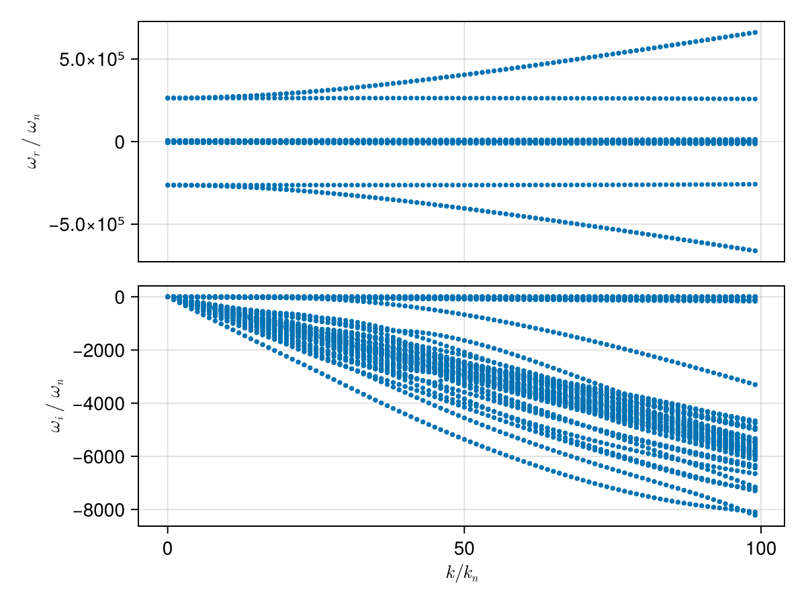
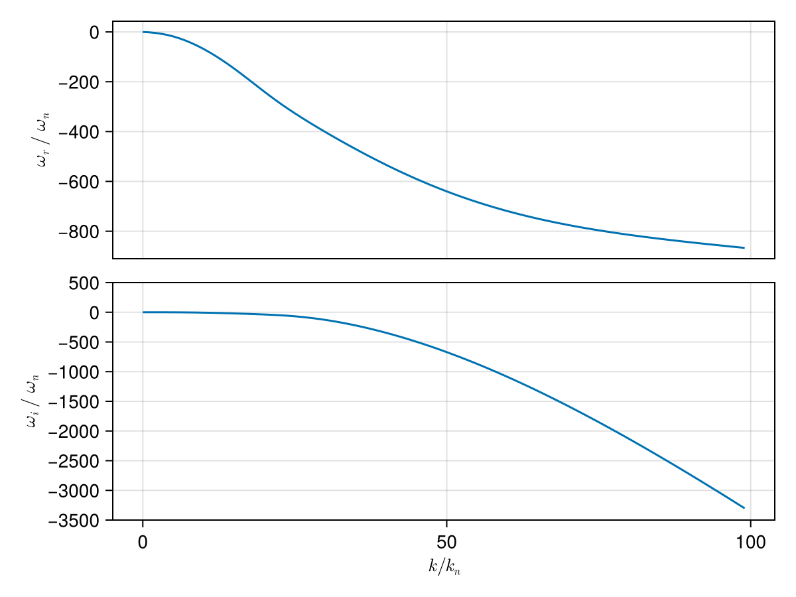
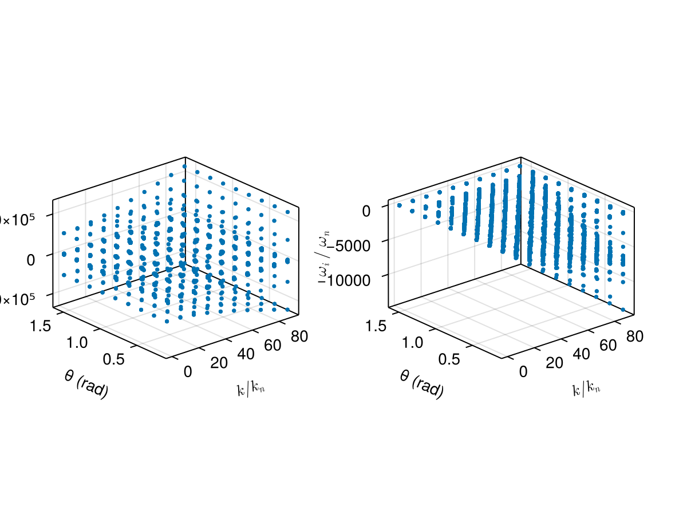

Case: Dispersion surface tracking (2D scan)
This page demonstrates how to construct a dispersion surface by scanning a 2D parameter space (wave number k and propagation angle θ) and using branch tracking to follow a consistent mode across the scan.
We consider a typical electron–proton plasma and scan:
kin normalized unitsk/k_n, wherek_n = ω_pi/cθfrom 5° to 90°
using PlasmaBO
using PlasmaBO: c0
B0 = 5e-9 # [Tesla]
n = 5.0e6
T = 12.94
ion = Maxwellian(:p, n, T)
electron = Maxwellian(:e, n, T)
species = (ion, electron)
wn = abs(B0 * ion.q / ion.m)
wpi = plasma_frequency(ion.q, n, ion.m)
kn = wpi / c0
wci = wn
# Kinetic solver settings (adjust upward for accuracy)
N = 33Dispersion Curve Scan
julia> using CairoMakiejulia> θ = deg2rad(45);julia> k_ranges = (0.01:1:100) .* kn;julia> results = solve(species, B0, k_ranges, θ; N)Solving dispersion (k, θ)... 13%|███ | ETA: 0:00:07 Solving dispersion (k, θ)... 42%|█████████▋ | ETA: 0:00:03 Solving dispersion (k, θ)... 69%|███████████████▉ | ETA: 0:00:01 Solving dispersion (k, θ)... 95%|█████████████████████▉ | ETA: 0:00:00 Solving dispersion (k, θ)... 100%|███████████████████████| Time: 0:00:04 PlasmaBO.DispersionSolution{StepRangeLen{Float64, Base.TwicePrecision{Float64}, Base.TwicePrecision{Float64}, Int64}, Float64, Matrix{Vector{ComplexF64}}}(9.81977277497953e-8:9.819772774979531e-6:0.0009722557024507233, 0.7853981633974483, Vector{ComplexF64}[[-126621.46687532129 - 3.064380139163011e-11im, -126181.23357016486 + 4.960162773425077e-10im, -125742.53584747238 + 5.4032754547342936e-11im, -2638.561512511642 - 0.2408707498504441im, -2638.5615125116283 - 0.2408707498510577im, -2638.561512511617 - 0.2408707498511275im, -2638.447079402981 - 0.26511858494171753im, -2638.447079402979 - 0.26511858494163204im, -2638.447079402978 - 0.2651185849414901im, -2638.354345226282 - 0.28028464658555463im … 2638.354345226271 - 0.2802846465866082im, 2638.44707940296 - 0.2651185849423943im, 2638.447079402973 - 0.26511858494169416im, 2638.447079402988 - 0.26511858494218815im, 2638.561512511596 - 0.24087074985125512im, 2638.561512511604 - 0.24087074985109894im, 2638.5615125116224 - 0.24087074985202012im, 125742.53584747275 + 3.327104692889568e-11im, 126181.23357016491 - 4.937078104930136e-10im, 126621.46687532155 - 5.50680677205667e-11im]; [-126647.93289248434 + 1.3852474722853003e-11im, -126198.78018485152 - 5.205449070715447e-10im, -125768.49400451657 + 9.108910847821505e-11im, -2671.7111478483143 - 24.32794573495312im, -2671.7111478482925 - 24.32794573495396im, -2671.7111475953097 - 24.32794638322121im, -2660.153403875812 - 26.776977079149734im, -2660.153403875801 - 26.77697707914928im, -2660.15339370981 - 26.77696518560282im, -2650.787333460289 - 28.308737350695978im … 2650.787333460295 - 28.308737350696138im, 2660.153393709818 - 26.77696518560267im, 2660.1534038758264 - 26.776977079149635im, 2660.1534038758273 - 26.776977079149177im, 2671.7111475953284 - 24.327946383221494im, 2671.711147848283 - 24.327945734952888im, 2671.7111478483025 - 24.327945734953325im, 125768.49400451672 - 7.854466193131246e-12im, 126198.78018484317 + 1.1520993723957454e-10im, 126647.93289248462 - 8.171005518375673e-11im]; … ; [-313940.64254257875 - 4.5782047159984424e-8im, -313861.5464174455 - 4.986314260835551e-8im, -123618.23036716961 - 2.45249789406245e-5im, -5887.225775507089 - 2360.7742192898313im, -5887.056696386698 - 2360.9532339551156im, -5774.271214584535 - 2344.2165983444897im, -5223.734491155755 - 2588.810620991686im, -5109.542451363684 - 2214.2248374752107im, -5007.815770121068 - 2360.7742192898877im, -5006.872705233741 - 2361.695775130949im … 5006.872705233696 - 2361.6957751309246im, 5007.815770120979 - 2360.7742192898595im, 5109.542451363695 - 2214.2248374752335im, 5223.7344911557875 - 2588.8106209917046im, 5774.271214584522 - 2344.2165983444825im, 5887.056696386715 - 2360.9532339551274im, 5887.225775507094 - 2360.7742192898463im, 123618.23036716961 - 2.452413738522705e-5im, 313861.5464174452 - 4.974344847141765e-8im, 313940.6425425792 - 4.561044875117659e-8im]; [-316611.4691783675 - 3.7968687883702615e-8im, -316532.82752609876 - 5.766537020917571e-8im, -123505.55495900511 - 2.5915225587489784e-5im, -5920.375410843808 - 2384.8612942749555im, -5920.19817390092 - 2385.048572113637im, -5802.211344748019 - 2366.0793521385935im, -5259.865772167345 - 2621.3752889476523im, -5147.171836823971 - 2234.9495259728683im, -5040.9654054577095 - 2384.861294274958im, -5039.996688056838 - 2385.80605130728im … 5039.996688056838 - 2385.806051307275im, 5040.965405457707 - 2384.8612942749533im, 5147.1718368239835 - 2234.9495259728014im, 5259.8657721672835 - 2621.3752889475286im, 5802.211344748033 - 2366.0793521386263im, 5920.198173900922 - 2385.048572113637im, 5920.375410843776 - 2384.861294274936im, 123505.5549590052 - 2.5914819571418743e-5im, 316532.8275260977 - 5.76501406612806e-8im, 316611.4691783667 - 3.799286218963971e-8im];;])
plot(results, kn, wn)
using PlasmaBO: plot_branches
# k, ω pairs for initial branch points (see `BranchPoint` for more control over tracking)
initial_point = (50 * kn, -600 * wn *im)
branch = track(results, initial_point)
f, (ax1, ax2) = plot_branches((branch,), kn, wn)
ylims!(ax2, -3500,500)
f
Dispersion Surface Scan (2D)
julia> ks = (0.1:10:100.0) .* kn;julia> θs = deg2rad.(10.0:10.0:90.0);julia> res2d = solve(species, B0, ks, θs; N)Solving dispersion (k, θ)... 28%|██████▍ | ETA: 0:00:03 Solving dispersion (k, θ)... 59%|█████████████▌ | ETA: 0:00:02 Solving dispersion (k, θ)... 88%|████████████████████▎ | ETA: 0:00:00 Solving dispersion (k, θ)... 100%|███████████████████████| Time: 0:00:03 PlasmaBO.DispersionSolution{StepRangeLen{Float64, Base.TwicePrecision{Float64}, Base.TwicePrecision{Float64}, Int64}, Vector{Float64}, Matrix{Vector{ComplexF64}}}(9.81977277497953e-7:9.81977277497953e-5:0.0008847615270256557, [0.17453292519943295, 0.3490658503988659, 0.5235987755982988, 0.6981317007977318, 0.8726646259971648, 1.0471975511965976, 1.2217304763960306, 1.3962634015954636, 1.5707963267948966], Vector{ComplexF64}[[-126621.80021764804 + 1.4751978149240771e-10im, -126181.24223376022 + 1.8102494091616306e-9im, -125742.8738579392 + 2.7464512648579234e-11im, -2642.84686028388 - 3.35467553470761im, -2642.846860283871 - 3.3546755347066375im, -2642.8468602838557 - 3.3546755347057227im, -2641.253117788602 - 3.6923820399584226im, -2641.2531177886 - 3.692382039959662im, -2641.253117788561 - 3.6923820399538445im, -2639.9615824983916 - 3.9036040998675974im … 2639.9615824983925 - 3.903604099866934im, 2641.253117788586 - 3.6923820399543956im, 2641.253117788587 - 3.6923820399573275im, 2641.253117788593 - 3.692382039957723im, 2642.846860283843 - 3.354675534707175im, 2642.8468602838657 - 3.3546755347064883im, 2642.846860283882 - 3.354675534706164im, 125742.87385793953 - 1.5164418958405526e-10im, 126181.24223376026 - 1.808368970531142e-9im, 126621.80021764741 - 2.5721894585189245e-11im] [-126621.78542391674 + 1.3330669576018528e-10im, -126181.27204911015 + 1.3965740401495973e-9im, -125742.85883577919 - 2.6381529847783938e-11im, -2642.635357548887 - 3.2009941386563265im, -2642.6353575488806 - 3.200994138659344im, -2642.6353575488665 - 3.2009941386560583im, -2641.114626159787 - 3.5232299354449843im, -2641.114626159765 - 3.523229935445614im, -2641.1146261597105 - 3.5232299353846384im, -2639.8822575298686 - 3.7247756791436695im … 2639.882257529878 - 3.72477567914276im, 2641.1146261597055 - 3.5232299353830294im, 2641.1146261597696 - 3.523229935444305im, 2641.1146261597714 - 3.523229935444751im, 2642.635357548878 - 3.200994138659608im, 2642.635357548881 - 3.200994138656133im, 2642.635357548891 - 3.2009941386552456im, 125742.858835779 - 1.3612030440157777e-10im, 126181.27204911016 - 1.3937805932377244e-9im, 126621.78542391684 + 2.515323303612795e-11im] … [-126621.64002586002 + 4.3312765049888236e-11im, -126181.56492171873 - 1.147355225302536e-10im, -125742.71135517812 + 1.3867925795078059e-10im, -2639.04409034333 - 0.5915198082912819im, -2639.044090343323 - 0.591519808291151im, -2639.044090343242 - 0.5915198085220799im, -2638.7630705411466 - 0.6510665767256052im, -2638.7630705410816 - 0.6510665767279472im, -2638.763070537406 - 0.6510665725313278im, -2638.535338052097 - 0.6883107200591054im … 2638.5353380520887 - 0.688310720058489im, 2638.7630705374036 - 0.6510665725317601im, 2638.763070541093 - 0.651066576727581im, 2638.76307054112 - 0.6510665767275099im, 2639.0440903432323 - 0.591519808523572im, 2639.0440903433355 - 0.5915198082916456im, 2639.044090343343 - 0.591519808292096im, 125742.71135517818 - 4.1221255828709974e-11im, 126181.5649217187 + 1.1380939017558151e-10im, 126621.6400258601 - 1.3629697405333137e-10im] [-126621.63488255297 + 1.8660036681362496e-10im, -126181.57527634628 + 9.989977136380912e-10im, -125742.70614359813 - 2.3378971304914783e-11im, -2638.23001615828 + 9.189680018918208e-13im, -2638.230016158276 + 6.794954600057535e-14im, -2638.2300161582707 - 2.5579538487363607e-13im, -2638.2300161582693 - 1.056932319443149e-13im, -2638.2300161582634 - 4.94460028477306e-12im, -2638.230016158261 - 1.376676550535194e-13im, -2638.2300161582593 + 2.7782220968219917e-12im … 2638.23001615826 - 6.039613253960852e-13im, 2638.2300161582607 + 3.979039320256561e-13im, 2638.2300161582625 - 3.552713678800501e-13im, 2638.2300161582634 + 3.410605131648481e-13im, 2638.230016158265 + 3.979039320256561e-13im, 2638.230016158268 - 7.105427357601002e-13im, 2638.230016158274 + 4.4766967910447875e-13im, 125742.70614359806 - 1.8899586334675434e-10im, 126181.57527634682 - 9.539777259003312e-10im, 126621.63488255299 + 2.54473124429745e-11im]; [-130046.23180107019 - 6.975262712529837e-11im, -129226.35672741263 - 3.031453410516782e-10im, -126179.48881185635 - 7.120495322809776e-9im, -3104.531272846259 - 338.8222290053438im, -3104.5312728462422 - 338.822229005345im, -3104.5312579689744 - 338.82225557320163im, -2943.563280822042 - 372.93058603576526im, -2943.5632808220407 - 372.93058603577117im, -2943.5629492920607 - 372.93003633563376im, -2813.1214069619905 - 394.26414247913135im … 2813.1214069619978 - 394.26414247912857im, 2943.562949292062 - 372.93003633563626im, 2943.5632808220084 - 372.9305860357681im, 2943.5632808220284 - 372.9305860357649im, 3104.5312579689794 - 338.8222555732042im, 3104.5312728462545 - 338.8222290053446im, 3104.5312728462595 - 338.82222900534566im, 126179.48881185616 + 1.7114167860654561e-9im, 129226.35672741293 + 2.8499692121776235e-10im, 130046.23180106994 - 3.080511659922045e-10im] [-130020.12452197788 - 1.8388137500814534e-10im, -129238.3648058379 - 3.232534024999228e-10im, -126168.23913100771 - 2.3909683909964736e-9im, -3083.169496612858 - 323.30040800420977im, -3083.169496612807 - 323.30040800426366im, -3083.1692757925753 - 323.30080396482236im, -2929.575626311533 - 355.8462234799595im, -2929.5756263107205 - 355.846223478847im, -2929.5706565882087 - 355.8380503637831im, -2805.15396939563 - 376.20400084294755im … 2805.1539693956315 - 376.20400084294647im, 2929.57065658822 - 355.83805036378635im, 2929.575626310728 - 355.84622347884886im, 2929.5756263115213 - 355.8462234799583im, 3083.1692757925784 - 323.30080396482253im, 3083.169496612829 - 323.30040800426247im, 3083.169496612846 - 323.3004080042092im, 126168.2391310067 - 1.4482477439514696e-9im, 129238.36480583828 - 3.665082794214135e-10im, 130020.12452197754 - 1.5508905083134282e-10im] … [-129717.76698906346 - 3.4722204385076714e-10im, -129565.6296648212 + 1.6221697815337534e-9im, -126098.71047222428 + 6.303517794284933e-11im, -2720.451508850623 - 59.743500637426024im, -2720.4515087463383 - 59.74350089012421im, -2720.441047385928 - 59.7665870479816im, -2692.0685088263012 - 65.75772424952608im, -2692.0685049451204 - 65.75771955865197im, -2691.733289209869 - 65.28442184344158im, -2671.573974835512 - 69.52398918934918im … 2671.5739748355063 - 69.5239891893465im, 2691.733289209854 - 65.28442184344163im, 2692.0685049451135 - 65.75771955865409im, 2692.0685088262703 - 65.75772424952561im, 2720.441047385917 - 59.76658704798024im, 2720.4515087463355 - 59.743500890124274im, 2720.451508850601 - 59.74350063742199im, 126098.71047222432 - 2.411376003388921e-11im, 129565.62966482002 - 1.5306334302486423e-9im, 129717.76698906218 + 5.089567314547075e-10im] [-129668.76650537757 - 4.554498864850814e-11im, -129616.10202991733 + 5.592687404314801e-9im, -126096.80894501766 + 7.144681844631503e-11im, -2638.2300161582716 - 8.526512829121202e-13im, -2638.2300161582684 + 1.4210854715202004e-12im, -2638.230016158267 + 9.094947017729282e-13im, -2638.230016158262 - 1.2256862191861728e-13im, -2638.23001615826 + 3.9257486150745535e-13im, -2638.230016158258 + 1.4253366864594228e-13im, -2638.230016158257 + 2.0476953466186387e-12im … 2638.23001615825 - 2.0961010704922955e-12im, 2638.2300161582534 + 3.126388037344441e-13im, 2638.2300161582534 + 1.0021427111695e-12im, 2638.230016158258 + 1.8829382497642655e-13im, 2638.2300161582625 - 4.948264020754323e-13im, 2638.2300161582625 + 3.091846528486618e-12im, 2638.2300161582684 - 1.7059022492604543e-13im, 126096.80894501782 - 7.119799580110158e-11im, 129616.10202991552 - 9.288873872319982e-9im, 129668.76650537741 + 4.4400589455271085e-11im]; … ; [-267526.6897011375 - 1.4024413000255809e-8im, -267333.9463584649 - 1.4632635940505652e-8im, -126172.77219117143 - 8.131282460243673e-5im, -6336.3221607828245 - 2687.09510329979im, -6336.322159074683 - 2687.095104650883im, -6336.238399861359 - 2687.1449193164976im, -5456.912155396775 - 2687.0951032998im, -5456.911892188269 - 2687.095272859924im, -5452.350753781642 - 2688.5246277113556im, -5059.887961382794 - 2955.986624764867im … 5059.887961382793 - 2955.9866247648615im, 5452.350753781663 - 2688.5246277113533im, 5456.9118921882955 - 2687.0952728599127im, 5456.912155396746 - 2687.0951032997573im, 6336.238399861373 - 2687.1449193165026im, 6336.322159074708 - 2687.0951046508917im, 6336.322160782871 - 2687.0951032998196im, 126172.77219117164 - 8.131347062725754e-5im, 267333.9463584645 - 1.4605575415771455e-8im, 267526.68970113725 - 1.3904355000704527e-8im] [-267503.4261524533 - 4.318429781043839e-8im, -267319.9842888088 - 4.4460170572252624e-8im, -126162.67963775912 - 5.874453722119956e-5im, -6166.908470060547 - 2563.996305063089im, -6166.908058156649 - 2563.9966482426707im, -6164.913344602658 - 2564.4497676076953im, -5287.498464674446 - 2563.996305063077im, -5287.483269961907 - 2564.008140618279im, -5251.723729621538 - 2561.2244724914203im, -4965.899650699187 - 2797.012465938773im … 4965.899650699189 - 2797.01246593878im, 5251.723729621519 - 2561.224472491426im, 5287.483269961878 - 2564.008140618271im, 5287.4984646744315 - 2563.996305063064im, 6164.913344602627 - 2564.449767607689im, 6166.908058156707 - 2563.996648242685im, 6166.908470060529 - 2563.9963050630777im, 126162.67963775925 - 5.87460536315154e-5im, 267319.98428880837 - 4.463595359993633e-8im, 267503.4261524526 - 4.3419277062639594e-8im] … [-266971.7163171807 + 2.925906536769608e-10im, -265749.96110866964 + 2.2738059627615917e-11im, -118413.00558056618 - 6.88752031767667e-10im, -3290.3034384015828 - 473.8073664413525im, -3290.131436873147 - 474.1119982352644im, -3257.8228059653443 - 512.8095690843979im, -3222.7561454919282 - 423.9507109118112im, -3065.2065768224575 - 521.5043279591085im, -3061.7978352008317 - 514.4723377181175im, -2972.366400525947 - 742.6364618166155im … 2972.366400525928 - 742.6364618165909im, 3061.7978352007854 - 514.4723377181135im, 3065.206576822449 - 521.5043279591084im, 3222.7561454918923 - 423.95071091185656im, 3257.822805965355 - 512.8095690843504im, 3290.1314368731296 - 474.11199823526135im, 3290.303438401605 - 473.8073664413557im, 118413.00558056633 - 6.747529067208219e-10im, 265749.9611086696 + 3.5793638816292156e-11im, 266971.71631718246 - 6.859455226049249e-10im] [-267036.43382901483 - 1.680516943209286e-10im, -265686.80543264456 + 1.1450396186774014e-11im, -117722.58317984045 - 4.181461632796524e-11im, -2638.230016158375 - 1.86637128278197e-10im, -2638.230016158273 - 1.3384848784880887e-12im, -2638.230016158259 + 1.9919274563129363e-12im, -2638.2300161582584 + 1.4621637234313312e-13im, -2638.2300161582566 + 5.027089855502709e-12im, -2638.2300161582552 + 7.260858581048524e-14im, -2638.2300161582543 - 3.3377391747448067e-13im … 2638.230016158262 - 2.0836665726164938e-12im, 2638.230016158263 + 1.48929757415317e-11im, 2638.230016158265 - 1.4780711377060385e-13im, 2638.2300161582657 - 3.448352714485736e-13im, 2638.2300161582657 + 3.907985046680551e-13im, 2638.230016158277 + 2.350777372848578e-12im, 2638.2300161583607 + 6.50031833915321e-11im, 117722.58317984045 + 4.319176184100629e-11im, 265686.8054326453 - 5.7172638926243355e-12im, 267036.433829015 + 1.2301089520288657e-11im]; [-293795.7799412529 - 1.416718383743161e-8im, -293635.99998901784 - 1.5038815820884088e-8im, -126176.20945010215 - 0.00014532798000897003im, -6798.006573345211 - 3022.562656770426im, -6798.006569082736 - 3022.562659875141im, -6797.868548884317 - 3022.6266227249353im, -5918.596567959125 - 3022.5626567704353im, -5918.596049435929 - 3022.562980651727im, -5912.412511842675 - 3023.7110549458025im, -5362.546384741917 - 3324.6220094755804im … 5362.5463847419 - 3324.6220094755963im, 5912.412511842659 - 3023.7110549458134im, 5918.596049435951 - 3022.562980651758im, 5918.596567959186 - 3022.562656770468im, 6797.868548884271 - 3022.626622724912im, 6798.006569082701 - 3022.5626598751187im, 6798.006573345234 - 3022.562656770446im, 126176.20945010224 - 0.0001453304408924063im, 293635.99998901726 - 1.5235855244100094e-8im, 293795.77994125185 - 1.4275428839027882e-8im] [-293760.4724871606 - 4.409045867291421e-8im, -293608.730136474 - 4.579608590841984e-8im, -126161.307462113 - 0.00010509097664844252im, -6607.44260912448 - 2884.0957189286237im, -6607.441666758609 - 2884.0965047533896im, -6603.932590101824 - 2884.45469893331im, -5728.03260373835 - 2884.0957189286046im, -5728.005596155186 - 2884.117128739108im, -5675.996686715524 - 2874.6337340820005im, -5269.211112220585 - 3146.122952895291im … 5269.211112220594 - 3146.122952895309im, 5675.996686715465 - 2874.633734081969im, 5728.005596155189 - 2884.1171287391116im, 5728.032603738444 - 2884.0957189286555im, 6603.932590101859 - 2884.4546989333285im, 6607.441666758617 - 2884.096504753399im, 6607.442609124448 - 2884.0957189286264im, 126161.30746211279 - 0.00010509122772613119im, 293608.73013647407 - 4.568300937535241e-8im, 293760.4724871611 - 4.420144250616431e-8im] … [-292980.77859298646 - 6.774567297928172e-10im, -291734.3181264645 - 9.640244127133165e-11im, -114316.92957399458 - 1.4315087801036045e-9im, -3371.7108569088837 - 532.9593472704914im, -3371.4518556099583 - 533.4071868750931im, -3335.4645308844783 - 586.1181888842472im, -3304.8366858131985 - 469.54987808335676im, -3118.512015107645 - 586.6109856319129im, -3113.884163132713 - 575.9049885785593im, -3014.4555529182867 - 846.6845431084879im … 3014.455552918284 - 846.6845431085068im, 3113.8841631326945 - 575.9049885785538im, 3118.512015107653 - 586.6109856319108im, 3304.8366858132063 - 469.54987808337im, 3335.464530884471 - 586.1181888842482im, 3371.4518556099615 - 533.4071868750906im, 3371.710856908881 - 532.9593472704895im, 114316.92957399458 - 1.1783182366488377e-9im, 291734.31812646444 + 1.4476286652885566e-11im, 292980.77859298664 + 2.972484480778803e-10im] [-293060.7825108112 - 3.638824770309355e-10im, -291674.0854377939 - 8.528013165711265e-11im, -113340.75968884518 - 2.7961468267272248e-11im, -2638.2300161593334 + 2.2274662034011346e-9im, -2638.23001615827 - 6.3202047762001e-14im, -2638.2300161582652 + 2.0611068407561106e-11im, -2638.230016158258 - 1.7834622667578515e-12im, -2638.2300161582557 + 2.6201263381153694e-13im, -2638.2300161582543 - 5.293706096291589e-11im, -2638.2300161582543 - 5.584948793453288e-13im … 2638.23001615825 - 5.0712977323282997e-11im, 2638.2300161582525 - 2.5515428242190503e-13im, 2638.230016158253 + 0.0im, 2638.230016158254 - 2.3054891329366e-12im, 2638.230016158256 - 4.147793219999585e-13im, 2638.2300161582566 - 4.5630166312093934e-14im, 2638.2300161599337 - 2.297102118574567e-10im, 113340.75968884496 + 1.4548526084919193e-11im, 291674.08543779305 + 7.896024952587163e-12im, 293060.7825108112 + 1.188376112738667e-10im]])
plot(res2d, kn, wn)
# Choose a reference angle and reference k for seeding the tracked mode
seed = (90.5 * kn, deg2rad(20), (1000 - 3000im) * wn)
branch = track(res2d, seed)
plot_branches((branch,), kn, wn)